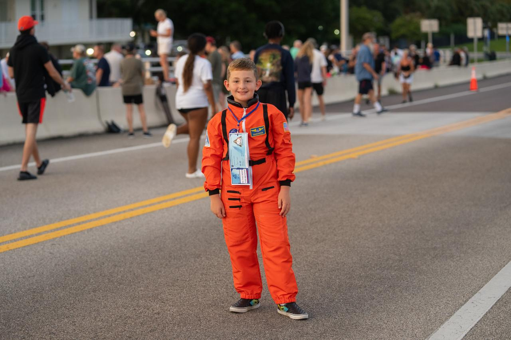
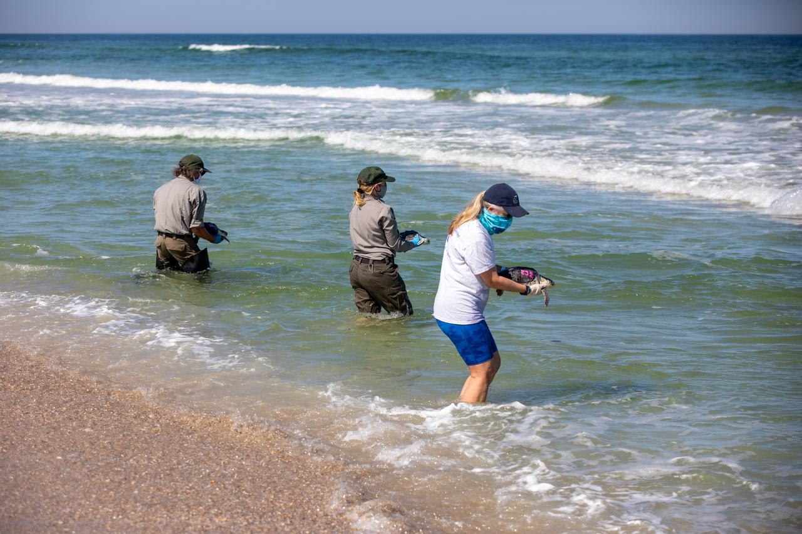

Cherie Down Park
Spiaggia, servizi essenziali e logistica generalmente meno tesa di Jetty Park. Avvicinati alla battigia per superare dune e vegetazione.
Vai alla scheda ↓Guida pratica · Cape Canaveral, Florida
Dove mettersi, quando arrivare, come parcheggiare e cosa fare se il Falcon 9 non parte. Una guida pensata per chi arriva davvero sulla Space Coast, non per chi la guarda soltanto sulla mappa.
Non esiste un punto perfetto per tutti. Scegli in base alla tua priorità e tieni sempre un secondo posto già deciso: accessi, meteo e capacità dei parcheggi possono cambiare.
Spiaggia, servizi essenziali e logistica generalmente meno tesa di Jetty Park. Avvicinati alla battigia per superare dune e vegetazione.
Vai alla scheda ↓Posizione rialzata, orizzonte ampio e buona lettura della traiettoria. Perfetto con un 100–400 mm, ma può riempirsi presto.
Vai alla scheda ↓Atmosfera Cape Canaveral, spiaggia e pier. Compra prima il pass della data esatta: al cancello non si paga.
Vai alla scheda ↓Acquista solo quando compare la pagina del lancio con il viewing disponibile. Un normale biglietto non equivale automaticamente a una vista premium.
Vai alla scheda ↓Il marker rosso è SLC-40. Seleziona un punto per leggere il consiglio essenziale, stimare la distanza in linea d'aria e aprire direttamente l'itinerario stradale.
Valutazione editoriale basata sulla ricerca locale e sulle informazioni ufficiali disponibili al 23 giugno 2026. “Distanza” indica una stima in linea d'aria dal pad, non il percorso in auto.
| Punto | Distanza indicativa | Accesso / parcheggio | Punto forte | Limite reale | Ideale per |
|---|---|---|---|---|---|
| Cherie Down | circa 19,0 km | Generalmente semplice, posti limitati | Compromesso mare/vicinanza | Dune e parcheggio ridotto | Prima esperienza, famiglie |
| Max Brewer | circa 22,5 km | Arrivare presto, traffico evento | Vista rialzata e traiettoria | Uscita lenta dopo il lancio | Foto e space enthusiast |
| Jetty Park | circa 17,3 km | Pass online prima | Servizi, spiaggia, atmosfera | Capacità, navi e strutture portuali | Giornata mare + lancio |
| Playalinda | circa 11,6 km | Ingresso NPS, capacità ridotta | Vicinanza e paesaggio naturale | Chiusure e saturazione possibili | Chi ha auto e piano B |
| Alan Shepard | circa 22,9 km | Molti posti, a pagamento | Accesso facile e servizi | Più lontano dal pad | Famiglie e video ambientati |
| Cocoa Beach Pier | circa 21,7 km | Parcheggi turistici a pagamento | Ristoranti e zero isolamento | Razzo piccolo a occhio nudo | Vacanza balneare |
| KSC Visitor Complex | Dipende dal sito assegnato | Biglietto/evento dedicato | Organizzazione ufficiale | Costo e policy scrub | Chi vuole un'esperienza guidata |
Le coordinate portano al parcheggio o al punto di accesso utile. Non puntano a zone operative: non oltrepassare cancelli, recinzioni o aree militari.
Scelta equilibrata
Meno “evento” di Jetty Park, più facile da trasformare in una giornata normale di spiaggia. Per vedere i primissimi secondi, porta l'osservazione verso la battigia invece di restare dietro le dune.
Scelta fotografica
Il vantaggio non è solo la distanza: è l'elevazione. Il razzo si segue bene sopra l'orizzonte, con meno ostacoli in primo piano. Nei grandi eventi la gestione del traffico può includere limitazioni temporanee.
Mare e atmosfera
È la scelta più “Cape Canaveral”: spiaggia, pier, servizi e navi. Il parcheggio richiede un pass acquistato online; con day pass della data esatta l'ingresso è garantito, ma il rientro non lo è quando il parco è pieno.
Più vicina e naturale
È magnifica quando tutto fila: costa naturale e ottima vicinanza al pad. Ma i lotti sono piccoli, possono riempirsi e l'accesso può cambiare per operazioni o sicurezza. Prima di partire controlla NPS e non considerarla mai l'unica opzione.
Logistica facile
È più lontano, ma offre una giornata semplice: molti parcheggi, spiaggia, servizi e una zona servita anche dalla rete autobus. Il lancio si vede bene in ascesa, con meno vibrazione e impatto rispetto ai punti più vicini.
Esperienza ufficiale
Le opportunità dipendono da missione, pad, orari e autorizzazioni. Il sito KSC pubblica soltanto informazioni ufficiali: se non esiste una pagina o un'opzione per quel lancio, non dare per scontato il viewing ravvicinato.



Il decollo dura pochi minuti; l'esperienza completa occupa mezza giornata o più. Costruiscila attorno a margine, parcheggio e possibilità di rinvio.
Controlla che la missione parta davvero da SLC-40, non da LC-39A. Salva pagina SpaceX, meteo, KSC/Port/NPS e un secondo punto di osservazione.
Scarica la mappa offline, fai carburante prima della zona evento e non contare su un rideshare immediato per il ritorno.
Individua il nord, trova il pad sulla mappa e scegli una posizione senza alberi, dune o lampioni. Non aspettare l'ultimo minuto per montare il treppiede.
Il video in streaming può avere ritardo. Tieni il volume basso, lascia un occhio all'orizzonte e non fissarti sullo schermo proprio al decollo.
Se il recupero è in mare, segui la missione; poi aspetta che il primo picco di traffico si muova. È spesso più piacevole di passare gli stessi minuti in coda.
La Space Coast non è organizzata come una città europea. Per vedere SLC-40 bene, l'auto è quasi sempre la soluzione più robusta.
Cape Canaveral/Cocoa Beach se vuoi mare, Jetty e Cherie Down. Titusville se preferisci Max Brewer, KSC e una logistica più flessibile.
Noleggio auto consigliato. Route 9 è utile per Cocoa Beach/Alan Shepard, ma non risolve Jetty Park o Playalinda. Uber e Lyft operano nell'area, con domanda e prezzi più alti dopo un lancio.
La foto più memorabile non è necessariamente quella col razzo più grande. Scegli prima se vuoi atmosfera, scia, persone o dettaglio del veicolo.
Per spiaggia, persone, ponte e scia. È la lente giusta se vuoi raccontare dove eri, non soltanto dimostrare che c'era un razzo.
La scelta più equilibrata per Jetty, Cherie Down e Playalinda. Permette di seguire bene la prima ascesa senza trasformare la ricerca del razzo in una caccia al francobollo.
Utile da Titusville e Cocoa Beach. Usa stabilizzazione o supporto e prova in anticipo messa a fuoco e movimento: il Falcon accelera molto più in fretta di quanto sembri in video.
Uno scrub non è un incidente nel viaggio: è una possibilità normale da includere nel progetto fin dall'inizio.
SLC-40 è dentro una base operativa della U.S. Space Force. La vista migliore non giustifica mai una scorciatoia in area riservata.
Resta su spiagge, parchi, strade e strutture aperte al pubblico. Cancelli, banchine, strade di servizio e aree militari non sono “punti segreti”.
Port Canaveral vieta le operazioni UAS senza autorizzazione scritta; KSC vieta i droni sulla proprietà. Lascialo in hotel: non è il posto per improvvisare.
Idratazione e protezione solare di giorno; luce discreta e attenzione al traffico di notte. A Playalinda rispetta dune, fauna, ranger e ogni chiusura.
Questa pagina serve a scegliere e organizzarsi. Il giorno del lancio, accessi, prezzi, orari e finestre devono essere ricontrollati nelle fonti operative.
Ricerca di base: “Guida pratica per vedere un lancio SpaceX da SLC-40 a Cape Canaveral”, aggiunta al progetto il 23 giugno 2026. Controllo pagine ufficiali effettuato il 23 giugno 2026. Crediti immagini: SpaceX/NASA; NASA/Steven Scifer; NASA/Kim Shiflett. Dati cartografici © OpenStreetMap contributors.